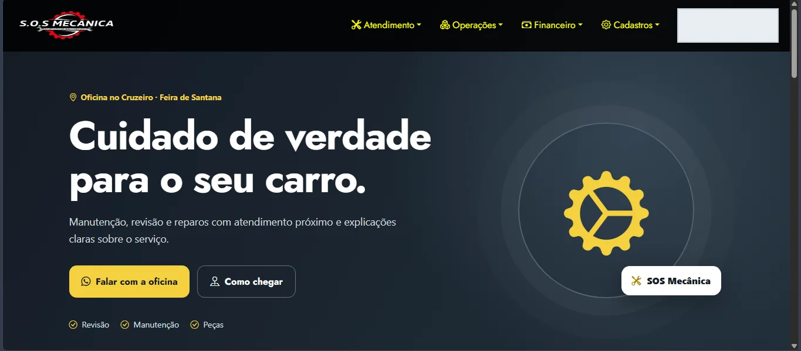
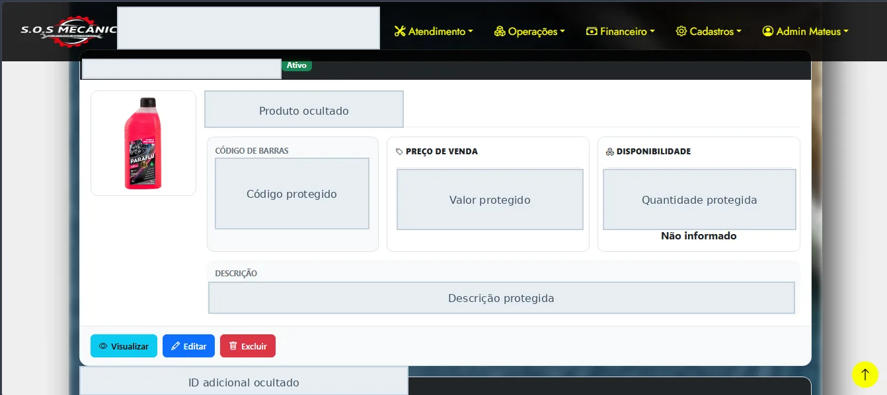
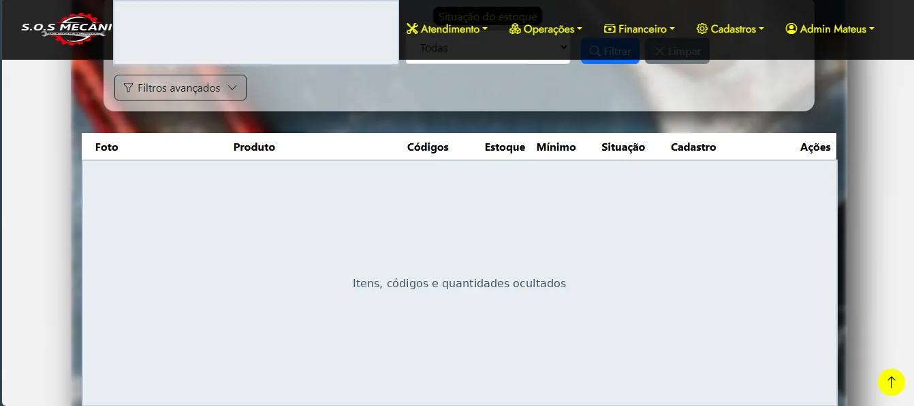
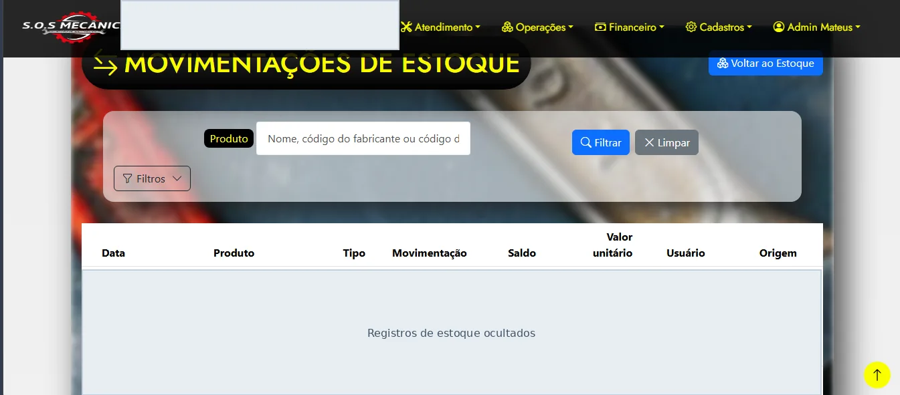
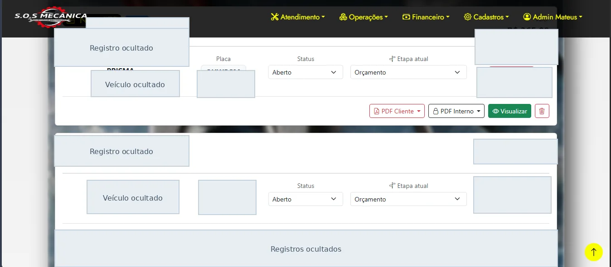

Contexto e funcionalidades
A aplicação foi construída para um negócio de manutenção automotiva, com fluxos relacionados a clientes, veículos, ordens de serviço, produtos, contas e atendimento. É um projeto independente aplicado a uma operação real, não um vínculo CLT de desenvolvimento.
Interfaces reais do sistema
As capturas foram realizadas na aplicação e publicadas com identificadores, registros, valores e dados de operação ocultados. Mostram a estrutura da interface, não um ambiente demonstrativo com acesso público.





Decisões observadas no código
- Validação de entrada: solicitações públicas de orçamento passam por Form Request com regras de tamanho, tipos, campos permitidos e verificação de produtos cadastrados.
- Confiança no servidor: os dados operacionais dos produtos são consultados no banco; preços ou descrições vindos do navegador não são tratados como fonte confiável no controlador analisado.
- Consistência: criação de lead e itens relacionada a uma transação de banco de dados.
- Controle de acesso: rotas de administração utilizam middleware de autenticação e perfil; pontos públicos incluem limitação de requisições.
- Testes: há casos automatizados para acesso de visitantes e perfis ao painel do Forge e outras situações de autenticação.
Visão simplificada
Entrega e infraestrutura
O projeto possui configuração Docker para desenvolvimento e workflow GitHub Actions que verifica código em pull requests. O fluxo de publicação distingue validar de publicar e exige acionamento manual e confirmação para produção, conforme arquivo público analisado.
Evidências diretas no GitHub
- Repositório do projeto ↗
- Controlador de orçamento ↗
- Validação da solicitação ↗
- Testes do painel Forge ↗
- Workflow de validação e publicação ↗